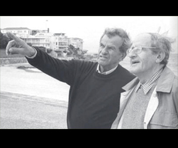

EL INICIO DE EISHEL
1948 - 1949 Se plantea la necesidad de construir un hogar para personas de la tercera edad. Se adquiere una casa en Cuernavaca para este fin.
Con más de 75 años de experiencia, nos enorgullece ser reconocidos como una de las principales residencias del país. Desde nuestro inicio en 1948, hemos dedicado nuestro compromiso a ofrecer servicios de primera calidad en salud, bienestar, seguridad y confort para adultos mayores que valoran su independencia y desean disfrutar de una vida plena en un entorno único y excepcional.
Se plantea la necesidad de construir un hogar para personas de la tercera edad. Se adquiere una casa en Cuernavaca para este fin.
El grupo de damas voluntarias organiza diversas, actividades, tales como festividades judías y visitas de escuelas.
Se constituye el primer patronato bajo la presidencia del Sr. Max Shein. Se innova el nombre de la institución quedando con el nombre con el que se cuenta actualmente “Eishel Nuestro Hogar A.C.”
Emitimos recibos de donativos deducibles de impuestos.
Institución con fines no lucrativos
Nuestra institución cuenta con un equipo profesional multidisciplinario integrado por médicos, psicólogos, fisioterapeutas, enfermeras, asistentes geriátricos y personal operativo, garantizando una excelente atención que gira en torno a las necesidades de nuestros residentes para su bienestar a largo plazo.